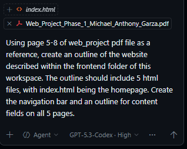

Prompt 1
This prompt was used to create the initial website outline. It created the basic HTML for all five pages, a navigation bar, and simple CSS styling. Follow up prompts were used to play around with the different color schemes and styles used. The HTML classes it created were very useful since they worked for nearly the entire website.